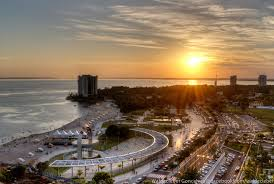
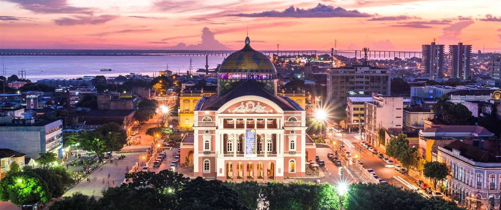
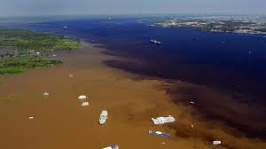

Passear na Ponta Negra

A Praia da Ponta Negra, é uma praia localizada no bairro da Ponta Negra, na
Zona Oeste da cidade de Manaus, às margens do rio Negro. Está localizada a
km do Centro da capital amazonense.
Além de ser um ponto turístico, Ponta Negra é o bairro mais nobre de Manaus.
No processo de modernização do espaço urbano do bairro, a intervenção
paisagística da praia da Ponta Negra resultou num grande complexo
arquitetônico, como o calçadão, anfiteatro e restaurantes, o que mudou a
paisagem e valorizou a área, já bastante rica por sua beleza natural. Mais
próximos da orla do Rio Negro estão localizados os grandes condomínios
fechados, áreas residenciais de alto padrão e mais valorizadas de Manaus
diante de um privilegiado e exuberante cenário. O bairro Ponta Negra é
também o principal vetor de crescimento de Manaus. Uma região que se valoriza
a cada dia com os investimentos que recebe em estrutura viária, residencial,
comercial, de lazer e cultura.
A Praia da Ponta Negra sempre é assunto. O que será que estão falando a
respeito no Twitter?
Ir ao Teatro Amazonas

Teatro Amazonas é um teatro brasileiro localizado no largo de São Sebastião, no
centro de Manaus, capital do Amazonas, inaugurado em 1896 é a expressão mais
significativa da riqueza de Manaus durante o ciclo da borracha. De estilo
renascentista entorno de sua estrutura externa com os detalhes únicos na sua
cúpula, tornou-se um dos mais conhecidos monumentos do Brasil e
consequentemente, um símbolo dos mais proeminentes de Manaus. A Orquestra
Filarmônica do Amazonas regularmente ensaia e apresenta dentro do teatro.
Veja mais a respeito do Teatro Amazonas
Teatro Amazonas.
Passear de barco pelo Encontro das Águas

O encontro das águas é um fenômeno natural facilmente visto em muitos rios da
região amazônica, os fatores para acontecer isso na região variam desde questões geológicas, climáticas,
termais ou até mesmo o tamanho ou a acidez dos rios, o mais famoso encontro das águas ocorre na frente
da cidade de Manaus entre os rios Negro e Solimões, mas tal fenômeno é notável em outras cidades
do Brasil, como em Santarém no Pará com o encontro das águas dos rios Tapajós e Rio Amazonas, em Tefé
no estado do Amazonas, entre os rios Tefé e Solimões e em Tapauá, Amazonas, o fenômeno também é visto
na frente da cidade com o encontro dos rios amazônicos do Purus e Ipixuna, e em muitos outros municípios
do interior da Amazônia brasileira, além da Amazônia internacional como em Iquitos, Peru, e em outras
localidades da Amazônia hispânica.
Em homenagem a esse fenômeno, o arquiteto Oscar Niemeyer elaborou um projeto de monumento ao encontro das águas,
ainda em projeto em Manaus, foi uns de seus últimos trabalhos antes de seu falecimento
Veja no mapa